Bibles
This section describes the use of the various converters built into OpenLP for managing and importing Bibles from other formats.
Bible Import Wizard
If you are using an earlier version of OpenLP or, come from another software package, you may be able to convert your existing database to work in OpenLP 2.0. To access the Bible Importer . You may also enter the Bible Importer by clicking the Import Icon:
- Import Bibles
- Click on the Import Bibles icon to start the Bible import wizard.
You will see the Bible Importer window, click Next.
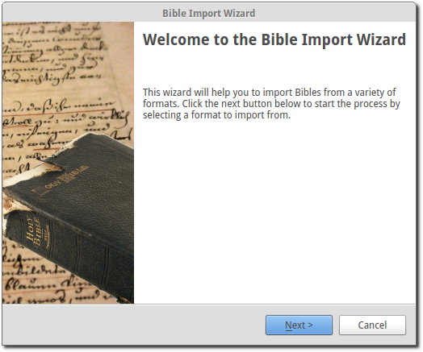After clicking Next you can select from the various types of software that OpenLP will convert Bibles from. Click on the file folder icon to choose the file(s) of the Bible database you want to import. See the sections below for more information on the different formats that OpenLP will import. Click Next to continue.
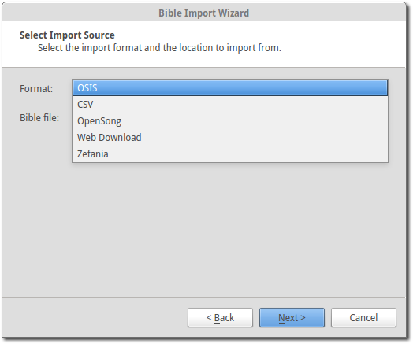After selecting your file(s), you’ll be asked to fill in the details of the Bible you are importing. Remember to check what information you need to display for your Bible’s translation, as some of them have strict rules around the copyright notice. Click Next to continue.
Note: You can use one blank space using the space bar in the copyright field to continue if you do not have or need copyright information.
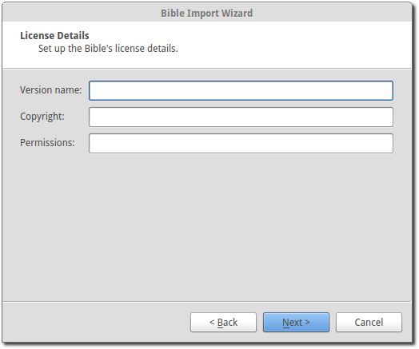After entering the license details, OpenLP will start to import your Bible. It may take some time to import your Bible so please be patient.
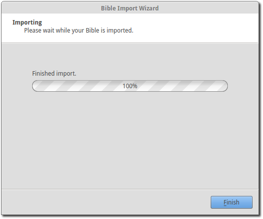When the import has finished click Finish and you should be ready to use your Bible in OpenLP.
Importing OSIS Bibles
Importing OSIS files is very simple. Select OSIS as your import source, select your OSIS Bible file and continue the import process.
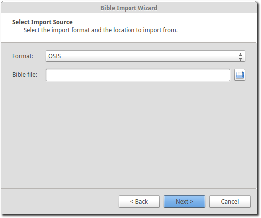About OSIS Formatted Bibles
The OSIS XML standard was designed to provide a common format for distribution of electronic Bibles. More information can be found out at the Bible Technologies website.
If you have any software installed that is part of the Sword Project it can be easily converted.
You can use the commands below convert Bibles from that software to OSIS format.
The following commands are used in all platforms and the commands are case sensitive across all platforms. To convert a Bible using the command prompt in Windows or a terminal in Linux or Mac OS X you would type:
mod2osis biblename > biblename.osis
For example: if I wanted to convert a King James Version Bible I would type something similar to this:
mod2osis KJV > kjv.osis
You may also wish to dictate a file location for the conversion to place the osis file for example:
mod2osis KJV > /home/user/bibles/kjv.osis
Importing OpenSong Bibles
Converting from OpenSong you will need to locate your Bibles database. In the later versions of OpenSong you are asked to define the location of this. The songs will be located in a folder named Bibles. This folder should contain files with all your Bibles in them without a file extension. (file.xmms). When you have located this folder you will need to select the Bible from the folder.
You may also import downloaded Bibles from OpenSongs webpage (scroll down to find bibles). The process is the same, except you will need to extract the Bible from a zip file. This is usually done by right clicking on the downloaded file and select Extract or Extract Here. Note that some of the bibles on OpenSongs webpage are actually in the Zefania format, which OpenLP can also import, see Importing Zefania Bibles.
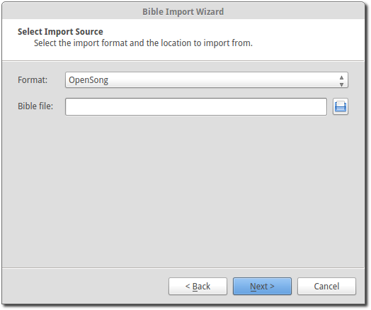After selecting the OpenSong Bibles you want to import, follow the rest of the import process. When the import has finished you should be ready to use your OpenSong Bibles.
Importing Web Download Bibles
About Web Download
OpenLP provides a Web Download method to import Bibles when you do not have a locally installed Bible available. The Web Download method registers the Bible in OpenLP like the other Bibles only it downloads the verses as you need them. This import is not meant to be used as your sole source for Bibles, but rather as another option and does require an internet connection.
To use the web download feature select web download from the import wizard.
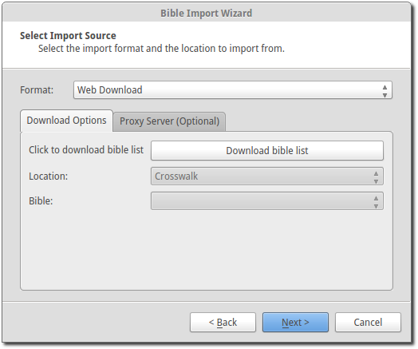First click Download bible list to download a list of available bibles.
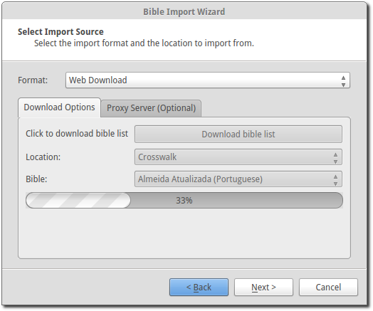This will take a few moments depending on your internet connection and load on the servers.
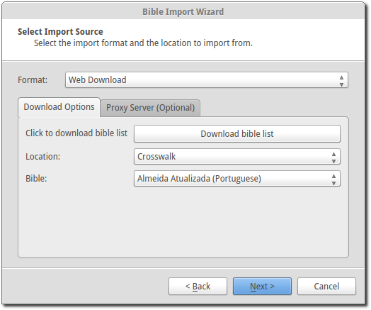When the download is complete you can select from 3 different sources to download from: Crosswalk, BibleServer and BibleGateway. From each source there are many Bible translations available, so there is a good chance that you will find what you need.
You can also select a proxy server if needed from the Proxy Server tab. Your network administrator will know if this is necessary. In most cases this will not be needed.
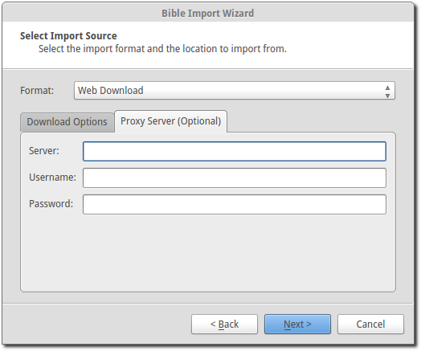After selecting your download location and the Bible you wish to use, click Next to continue the import process. When your import is completed you should now be ready to use the web Bible.
Importing CSV formatted Bibles
If you have a Bible in .csv format OpenLP can import it. If you wish to create a bible in the CSV format yourself the format is documented in the OpenLP API documentation.
CSV Bibles will consist of two files a books file and a verse file. Select CSV from the list of Bible types to import.
You are now ready to select your .csv files. You will need to select both your books and verse file location.
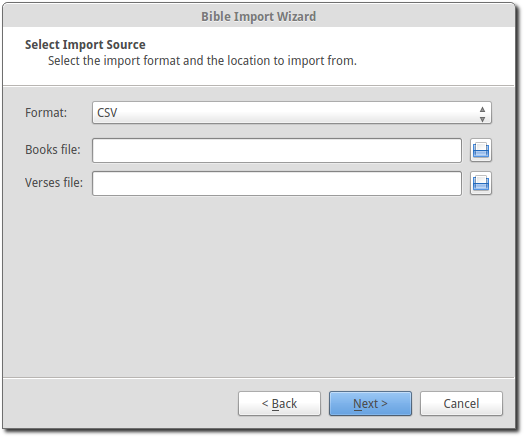After you have selected the file locations you can continue with the import process. Once it is complete you should be ready to use your imported CSV Bible.
Importing Zefania Bibles
The Zefania project has many Bibles available from their website. Find the Bible you would like to import and download the file. The downloaded file is a zip-file from which the Bible must be extracted. This is usually done by right clicking on the downloaded file and select Extract or Extract Here.
You can now simply select the extracted file for import and click Next to continue the import process. When your import is completed you should now be ready to use the imported Zefania Bible.